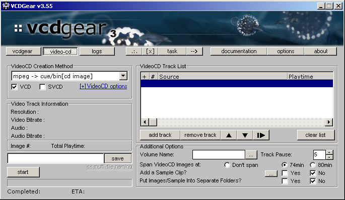
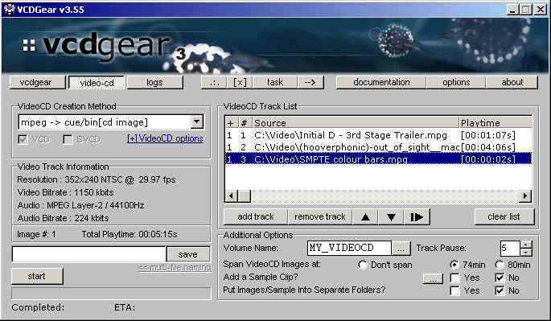
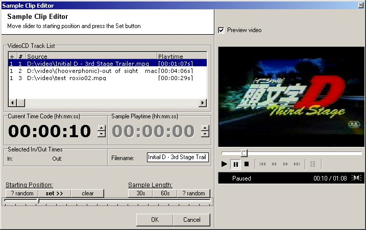

|
|
Creating VideoCD Images
STEP 1

Select the VideoCD creation method you want to use and a volume name for the image file.
Setting the Volume Label
VCDGear can accept a
volume label for the image you create. The volume label can be entered in
the space provided -- you have a maximum of 32 characters. VCDGear can
also apply a labelling
format so that you can have different volume labels if you are outputting to
multiple images (see Spanning).
Pressing [ ... ] will let you enter in the format of the volume label.
For example, suppose
VCDGear generates 3 images and you want each image to have the following
label: MOVIE_DISC_1
MOVIE_DISC_2 MOVIE_DISC_3
The volume label format will be: MOVIE_DISC_%d
The %d would
represent the image number. Anyone who is familiar with Java, C/C++ will
recognize
this format. Of course, you can also have %02d and any other crazy
combination you want :-)
Note: The ISO standard for
the volume label requires that only certain characters can be
used. VCDGear will allow one to break this standard so that high-bit
ASCII can also
be used.
Output Naming Format
When you have files
added into the track list, the [ << multi-file naming ] will be
available. This
lets you select how you want the output file to look like. Like the volume
label formatting, multiple
output files (due to spanning) can each be given a naming convention so that the
first image
has a name of:
IMAGE_1.bin and the
second: IMAGE_2.bin
etc...
STEP 2

Add video
tracks in the order you want the files to play in. The positions of the
tracks can be
moved up
and down via the up/down arrows. Tracks can
also be deleted by the [remove track].
Selecting a specific track in your list will
display MPEG information about that file in the left box.
A track list can be cleared by clicking on the
[clear list] button.
In the VideoCD Track
List, there are 3 columns. The + column represents the image number.
If you are
only making a single CD image, this will always be 1. If you span your
MPEGs, there may be more
than 1 image. The # column represents the track number for that image.
You can play any track in the list by selecting it and clicking on the play button beside the down arrow.
Spanning Images
VCDGear can span
your images if your MPEGs are over 74min or 80min in length. To enable
this,
make sure the Span VideoCD Images at 74min (or 80min) is checked. Any
additional tracks that
you add will also be split across multiple images if total disc time for that
image goes over 74/80mins.
Adding a Sample Clip
You can only add a
sample clip if you have tracks in your track list. Clicking on Yes to add
a sample
clip will bring up the following screen:

You can set the
starting position of the sample by moving the slider (not the slider under the
video).
Clicking on [ ? random ] for the starting position will randomly select a
point in the video. Click [ set >> ]
when you're done picking the starting position.
Move the slider to
set the finish position. There are buttons for preset 30/60 second lengths
and one
for random. When the slider is in position, click OK.
The sample clip will be generated after VCDGear has finished building the images.
STEP 3
The track pause time
(delay between video tracks) can be set by adjusting the value. By
default, this is
set to 5 seconds.
Click [save] to specify your output file.
NOTE: Save your output file to the
hard drive and *NOT* to your CD drive.
Refer to Writing VideoCD Images to CD on what to do
after this step is complete.
Then click [start]!